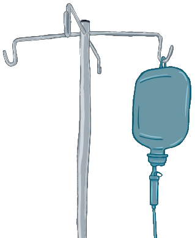

Fluidoterapia de manutenção: Holliday-Segar
Calculadora de manutenção hidroeletrolítica de Holliday-Segar
Esta ferramenta deve ser usada para pacientes já fluido-ressuscitados e sem desidratação ou distúrbios hidro-eletrolíticos.
Nenhuma calculadora substitui seu julgamento clínico!
Esta calculadora aceita valores decimais nas unidades indicadas.
Use pontos e não vírgulas.
Ao usar soro glicosado como fluido principal, deixe em branco os campos de glicose.
Veja aqui sobre hidratação venosa em geral.
Fluido
Sódio
Tonicidade do sódio
Potássio
Referências
- HOLLIDAY MA, SEGAR WE. The maintenance need for water in parenteral fluid therapy. Pediatrics. 1957 May;19(5):823-32. PMID: 13431307.